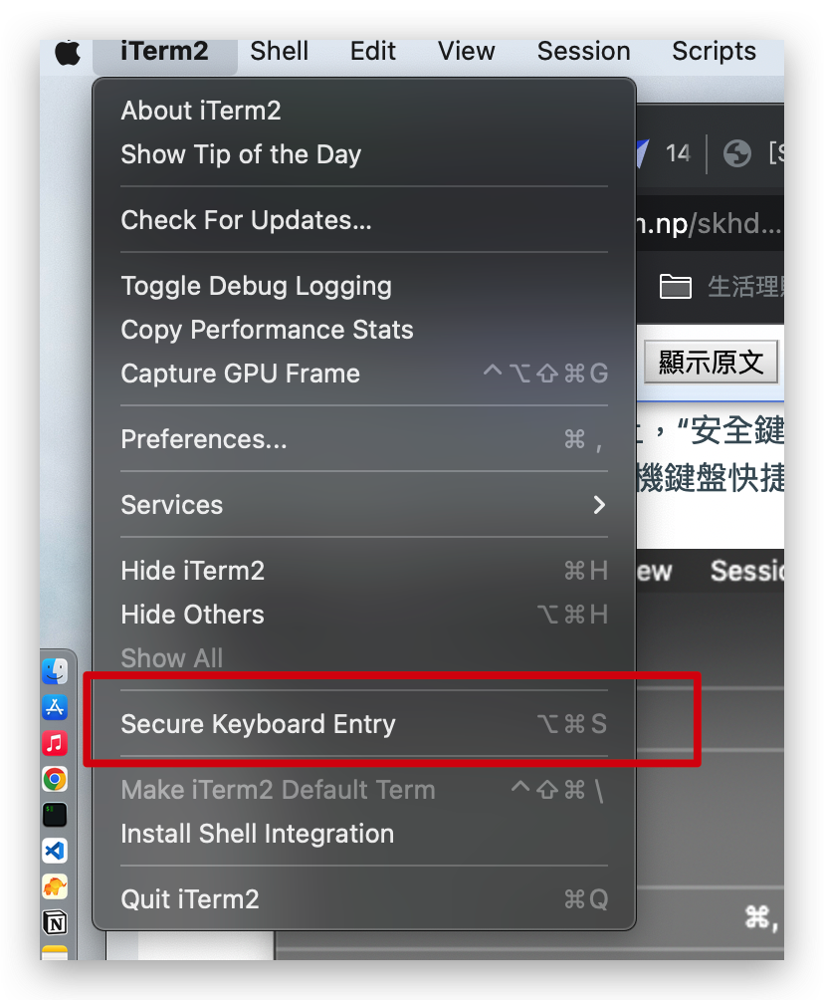
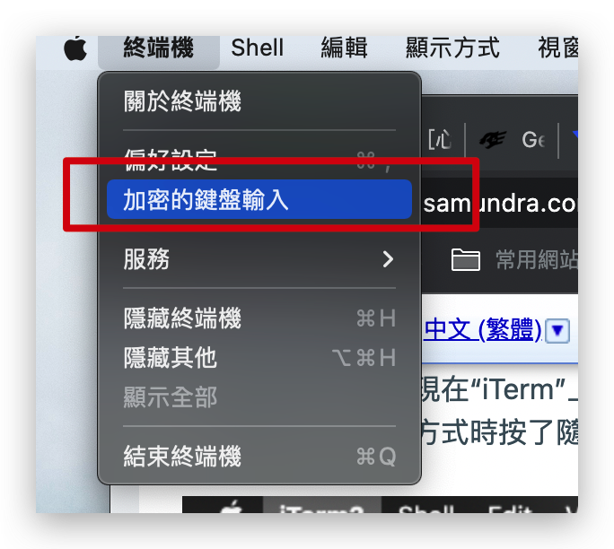
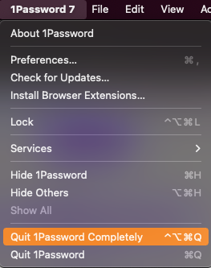
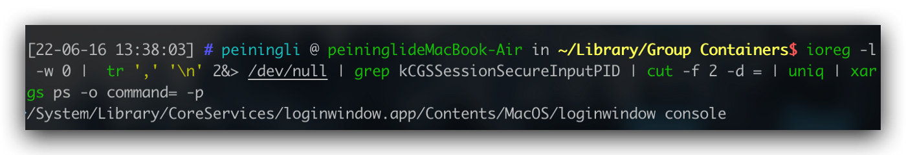

# [Tech] skhd 失去功能 (Not working) 的解決方法
Skhd 是一個適用於 MacOS 的小實用軟件，它允許我們重新映射各種操作的快捷方式。然而在某次 Mac 升級之後就發生 skhd 時不時停止運作的狀況。
Debug
首先我必須要停止 skhd 的 process. 使用 brew 來做到。
$ brew services stop skhd
之後，可以使用 skhd -V 來以詳細模式運行
$ skhd -V
skhd: successfully created pid-file..
skhd: secure keyboard entry is enabled by (5530) 'iterm2'! abort..
訊息中顯示 mac 有一個 secure keyboard entry 的模式不知道為什麼被打開了。
通過進一步搜尋可以知道我們可以使用 iTerm2 的 menu 或是 Terminal 的 menu 來關閉這個模式。


到這邊理論上只要可以取消，之後再把 skhd 重啟就可以完成了。
$ brew services start skhd
# 更加複雜的 Debug
事情如果到那邊就完結了，我也不用再寫這篇了。
可惜問題就是發生在 secure keyboard entry 無法被正確 disable
因此我又繼續尋找資料，後來看到了 這篇 ，源自 Fig 一個新的 Termial plugin 有講到類似的除錯方法。我就一步一步整理過來。
裡面有講到「如果無法取消選中該複選框，則 iTerm 檢測到安全輸入已啟用，但它不是負責的應用程序。要弄清楚如何禁用它，請繼續故障排除部分。」
其羅列了以下幾種可能的原因
一、與密碼管理器衝突 (1Password, BitWarden)
某些密碼管理器在輸入主密碼時會啟用 Secure Keyboard Entry ，但之後偶爾會無法禁用它。
如果您使用 1Password、Bitwarden 或其他密碼管理器，請退出應用程序，然後檢查是否仍啟用 Secure Keyboard Entry 。
注意：如果您要退出 1Password，請確保您完全退出它，而不僅僅是正常的 cmd+q 退出

如果是密碼管理器負責，只需重新啟動它即可解決問題。否則，請繼續故障排除部分。
二、其他未知的應用程序
有時其他應用程序會啟用安全輸入，但在不再需要時無法將其關閉。
我們可以使用以下指令顯示出需要使用此設定的應用程式。
$ ioreg -l -w 0 | tr ',' '\n' 2&> /dev/null | grep kCGSSessionSecureInputPID | cut -f 2 -d = | uniq | xargs ps -o command= -p

在我的例子中會發現是一個叫做 loginWindow 的 process 暫用著。這似乎是 MacOS 的小 bug ，有時後 loginWindow 在 user login 之後不會 terminal (disable secure input entry) .
這時候僅需要使用 ⌃ Control` + `⌘ Command` +`Q 將畫面進到上鎖之後重新登入，理論上就能夠解決這個問題。
不過，如果這樣的方式依然無法解決，也許「登出」、或「重開機」會是最後的解決方法。
# 參考資料
- SKHD SUDDENLY STOPPED WORKING AFTER UPGRADE
- Fig and Secure Keyboard Input